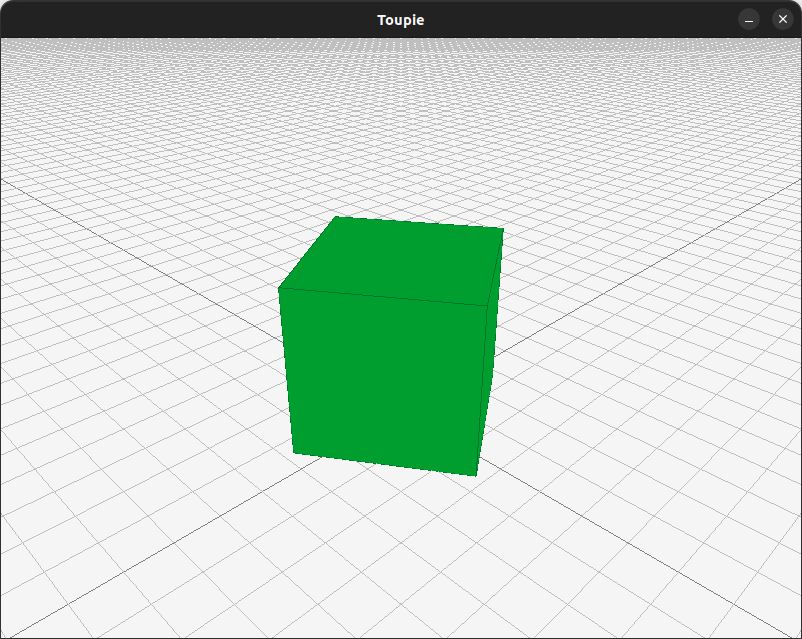

Cinquième exemple : évolution en temps réel¶
Un peu de théorie¶
Le terme « temps réel » représente le fait que le temps (physique) qui s'écoule a une signification dans le programme. Jusqu'ici dans vos programmes, l'utilisateur pouvait attendre 1 seconde ou 10 minutes à l'invite d'un cin sans que cela ne change en rien le comportement du programme. Dans un processus « temps réel », le programme continue par contre d'effectuer des actions représentant l'écoulement du temps physique, que l'utilisateur agisse ou non. Ceci permet par exemple d'animer de façon réaliste les éléments du monde que l'on représente.
Considérons le cas d'une balle qu'on lâche depuis une certaine hauteur. On pourrait, comme dans l'exercice que vous avez fait au premier semestre, calculer à l'avance le temps au bout duquel la balle touchera le sol. Mais dans une simulation physique en temps réel, on voudrait avoir la position de la balle à chaque instant, par exemple pour pouvoir l'afficher.
On doit donc pouvoir être capable de décrire à chaque instant la nouvelle position de la balle en fonction de la position précédente et du temps écoulé entre deux calculs. Ce temps est simplement le temps que l'ordinateur a mis pour calculer et afficher la dernière position.
Dans une simulation numérique non temps réel, cet intervalle de temps \(dt\) est fixé à une valeur arbitraire, aussi petite que la précision de calcul voulue le nécessite (voir cours d'analyse numérique).
Dans un programme « temps réel », c'est par contre la puissance de la machine qui détermine la valeur de \(dt\) : plus la scène est complexe à animer et afficher, plus \(dt\) sera grand, et plus la simulation sera approximative et l'animation saccadée.
NOTE : La raison pour laquelle on ne fixe pas à l'avance l'intervalle \(dt\) est qu'on a a priori aucune idée du temps que prendra le calcul (et l'affichage !) d'une image et, surtout, qu'on n'a aucune garantie que ce temps restera constant : plus il y a d'éléments à prendre en compte, plus ce temps augmentera. On s'en rend bien compte dans certains jeux vidéos : lorsqu'il y a un phénomène complexe (p.ex. une explosion) ou trop d'unités à gérer, c'est le nombre d'images par seconde qui diminue et non le temps qui se dilate.
Concrètement, \(dt\) est donné par l'écart entre l'image précédente et l'image actuelle, et il est calculé à chaque itération de la boucle principale du programme.
La simulation est donc une boucle qui répète en permanence plusieurs étapes, parmi lesquelles :
- calcul (ou mise à jour) : on détermine l'état suivant du système, à partir de l'état courant et du pas de temps \(dt\) ; c'est dans cette phase que dans votre projet interviendront les équations de la simulation ;
- affichage à l'écran (ou sur tout autre support à dessin) : on envoie les données vers la carte vidéo (ou sur
cinou dans un fichier, etc.) ; - gestion des interactions (clavier, souris).
En théorie, aucun calcul concernant la simulation n'est à effectuer dans ces deux dernières phases.
Enfin, lorsqu'une certaine condition d'arrêt est atteinte (p.ex. un certain délai dépassé, une précision suffisante ou un évènement particulier [p.ex. clavier]), on arrête simplement le programme.
L'exemple¶
Pour cet exemple, nous repartons des fichiers de l'exemple 2, et nous modifions le Contenu afin qu'il ait un angle de rotation, ainsi qu'une méthode faisant évoluer cet angle pendant dt.
Vous pouvez donc, comme pour le troisième exemple, repartir du deuxième exemple, puis éditer les fichiers modifiés ; p.ex. sous Unix :
puis éditez lesmkdir CinquiemeExemple cp -r DeuxiemeExemple/CMakeLists.txt DeuxiemeExemple/general DeuxiemeExemple/raylib CinquiemeExempleCMakeLists.txtcomme d'habitude.
Dans general/contenu.h :
class Contenu : public Dessinable {
public:
// ...
Contenu(double a = 0.0) : angle(a) {}
// ...
double get_angle() const { return angle; }
void evolue(double dt) { angle += 10.0 * dt; }
private:
double angle;
};
On modifie ensuite la méthode run() de raylibRender pour faire évoluer le contenu à chaque itération de la boucle principale :
void raylibRender::run() {
while (!WindowShouldClose()) {
const auto dt = GetFrameTime();
c.evolue(dt);
BeginDrawing();
// ...
}
Le seul changement par rapport au deuxième exemple est que l'on récupère le temps écoulé depuis la dernière image avec GetFrameTime(), et que l'on fait évoluer le contenu en appelant la méthode evolue() avec ce temps.
Par ailleurs, il faut aussi modifier la méthode dessine() pour prendre en compte l'angle de rotation. On va pour cela utiliser la bibliothèque rlgl de raylib, qui permet de faire des transformations sur les objets 3D par des matrices (voir ce document d'OpenGl sur le sujet ; OpenGL est la bibliothèque sur laquelle est construite raylib).
// ...
#include <rlgl.h>
// ...
void raylibRender::dessine(Contenu const& a_dessiner) {
constexpr Vector3 position({ 0.0f, 1.0f, 0.0f });
rlPushMatrix();
rlRotatef(static_cast<float>(a_dessiner.get_angle()), 0.0f, 1.0f, 0.0f);
DrawCube(position, 2.0f, 2.0f, 2.0f, LIME);
DrawCubeWires(position, 2.0f, 2.0f, 2.0f, DARKGREEN);
rlPopMatrix();
}
Si l'on désirait seulement mettre à jour la position du cube, il suffirait simplement de changer son vecteur de position sans se soucier de ces transformations (rotation ici).
Décortiquons ce qui se passe. La fonction rlPushMatrix() commence les transformations qui seront appliquées jusqu'à l'appel de rlPopMatrix(). On applique ensuite celles que l'on veut effectuer, ici une rotation autour de l'axe Y, avec rlRotatef(), qui prend en paramètre l'angle de rotation (en degrés) et les coordonnées de l'axe de rotation (on trouvera ici un exemple plus complexe, ainsi que d'autres possibilités offertes par rlgl).
Après compilation, on devrait alors avoir un cube qui tourne :
